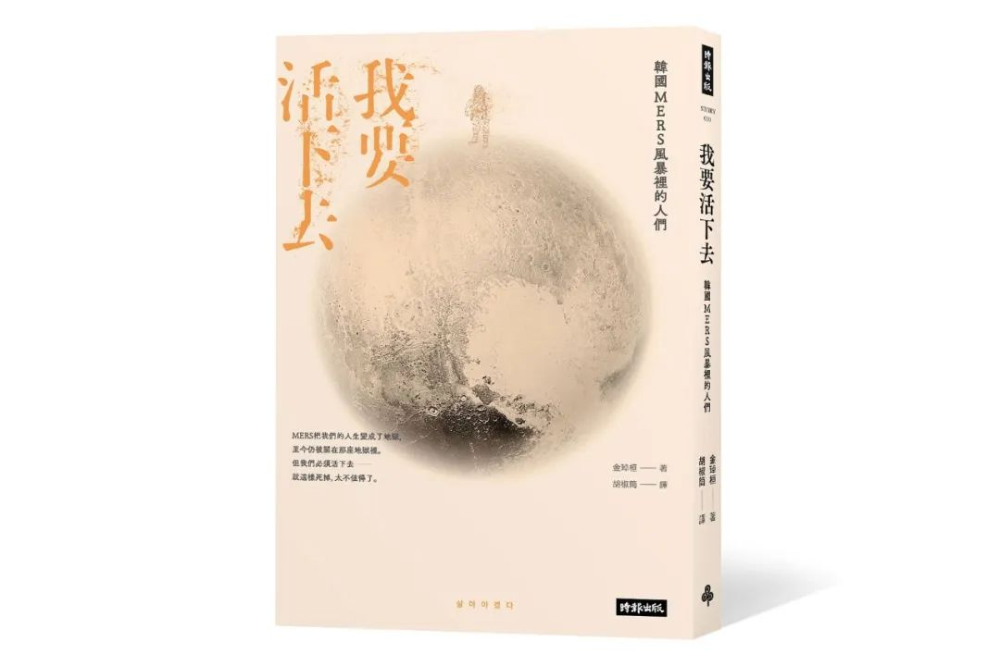
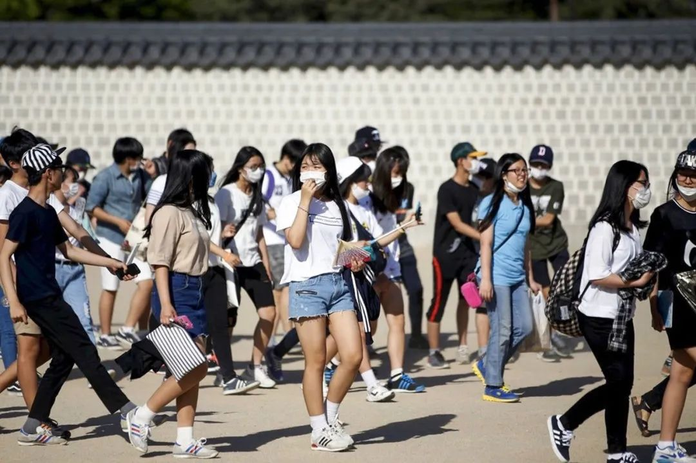
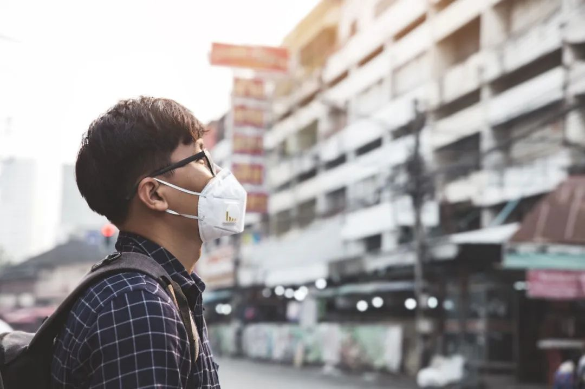
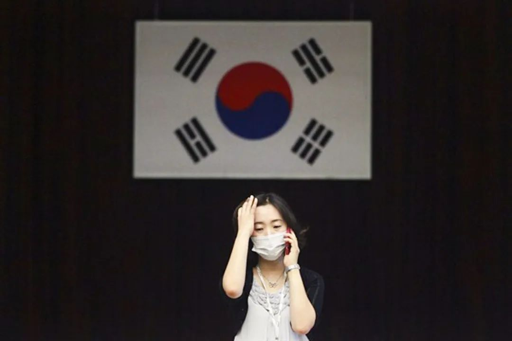
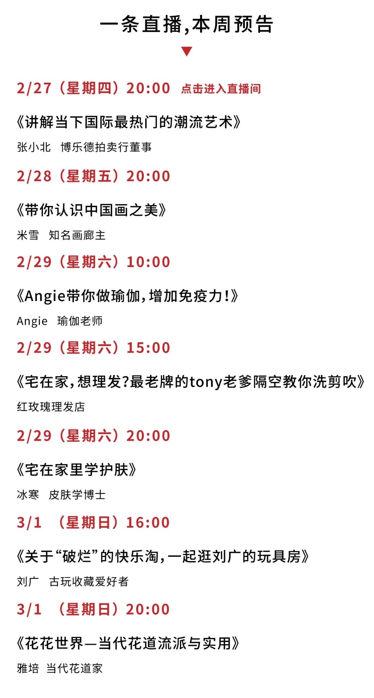

中国疫情蔓延初步遏制，全球何以多地聚集感染？
原文链接 备份链接 IMF认为，若一切向好的方向发展，中国经济有望从二季度开始恢复正常。近日个别国家和地区确诊病例激增，确诊首例新冠病毒感染病例的国家和地区也在增加，是新感染群体的感染源越来越难以查明？还是疫情传播到了某个新的临界点？ …


据2月26日韩国中央防疫的通报，
韩国新冠肺炎确诊病例总数达到1261例，
死亡12例。
在短短不到一周内，韩国新冠疫情井喷式爆发，
在疫情最严峻的大邱市，
当地民众排千米长队买口罩。
回头看5年前，
2015年5月到7月，
中东呼吸综合症MERS曾经席卷韩国，
共计186个确诊病例，造成38人死亡，
一度迫使上千所中学、小学关停。

韩国作家金琸桓以MERS的受害人为背景创作记实小说
在各界关注确诊数字、死亡率、
经济影响、恐慌之下，
韩国金琸桓看到了一个又一个无助的病人，
他们没有名字、不敢曝露身份，
留下的只有编号：
1号病人、2号病人……
于是他以MERS病患真人真事为来源，
创作了纪实小说
《我要活下去：MERS风暴里的人们》
“我一直坚信文学应该站在
穷苦、弱势和受伤害的人这边。
不仅文学，我们每一个人都应该这样。”
今年1月初，该书的中文译本出版，
一条专访了金琸桓，
从MERS到新冠病毒肺炎，
灾难为何总在一次次重演？
在说出“不会遗忘、会永远记住”之前，
我们需要知道应该记住什么，
必须找回“人”，而非“数字”。
*******自述 ********** 金琸桓 ****编辑 ********** ****白汶平***************************

金琸桓关心社会议题，并通过写作为弱势发声
韩国作家金琸桓1968年生，被誉为“开创韩国历史小说新局面的作家”。他擅长以社会中的真实人物为原型，创作纪实小说。曾两次以“2014年韩国世越号沉船事件”为来源创作，《不灭的李舜臣》《黄真伊》等多部小说被改变为影视剧。
2016年，他开始筹备以MERS受害者为背景的小说《我要活下去：MERS风暴里的人们》。除了搜集海量资料、查看新闻报道，还探访当年经历MERS的病患、家人、医护，在小说中还原他们遭遇的困境、当时社会的氛围，及反思到底谁该为此负责？

2020年1月，《我要活下去：MERS风暴里的人们》中文译本出版时，遇上了新冠肺炎病毒在全球传播。金琸桓原计划2月7日出席台北书展时，接受一条团队专访拍摄，没想到书展因为疫情延期，我们改用邮件采访。
从2015年的MERS到2020年的新冠肺炎，面对疫情灾难时，社会做得更好了吗？
以下是金琸桓的自述。

图片来源: KIM HONG-JI/REUTERS
传染病结束了，但人生依旧继续。
我想把MERS事件写成小说，是在2016年的晚春。距离2015年5月，名为“中东呼吸症候群”的传染病席卷韩半岛已经一年。很多MERS受害者都不愿受访，我好不容易联系上几个人，他们委屈地哭诉着MERS是如何毁掉自己的人生，却仍不愿跟记者见面。
他们说，如果网友要肉搜，就没有能隐瞒的事——谁都不想再次被贴上MERS病人的标签。
我重新看了2015年与MERS相关的新闻和电视节目，与政府、地方政府和医院的医护人员有关的内容多不胜数，报道MERS受害者的却少之又少。就算有，内容也多半是按照确诊顺序编码后、住进隔离病房发生的事。
他们作为自由的个人、社会共同体的一分子，我们在报道中却看不到这些人的过去、现在和未来。

为受害者立传：
希望他们作为个体生命被记住
于是我开始着手写受害者的故事。在说出“不会遗忘、会永远记住”之前，我们需要知道应该记住什么，必须找回“人”，而非“数字”。 在很多人的帮助下，我与受害者见了面。

我很感谢那些跟我见面和未能见面的人，到目前为止，还没有正式组成MERS受害者的团体，我很能理解他们那种复杂的心情和面对的现实。人们被狭隘地划分出正常与非正常，而被划分在非正常里的这些人，被一而再、再而三地贴上标签、受到厌恶。
正因如此，我觉得很难直接用现实的人物、事件和背景去创作纪实文学。虽然我将自己见过的这些人更改了设定，但仍希望原原本本地写出他们的痛苦，那些有时是叹息、有时是泪水、有时是悲鸣、有时是挣扎、有时是沉默的痛苦！
我长时间地凝视他们，聆听他们，一起查阅资料、进行实地考察。这过程让人感到悲凉，“如果这里不是地狱，哪里才是地狱？”、“那地狱现在也还在持续”……这些话语和叹息，深深刺痛着我的心。

图片来源: AP
那些“感染过MERS”的人们，
与不忍卒睹的人生
巨大、冰冷的高墙暴露了出来。
国家和医院不承认错误，因为不承认，所以没有任何补偿和赔偿，这种方式对因传染病失去一切的人何其残忍。 绝大多数受害者都不具专业医学知识，很多人一辈子没上过法庭，对法律知识也一无所知。
倾吐委屈的痊愈者和遗属，记不清楚在隔离病房接受过怎样的治疗，病人的病情何时开始恶化或恶化的程度。他们只记得好好的一个人在短短十天、半个月内，不断在死亡线上挣扎，过程却说不清楚，这又让他们陷入深深的绝望。
生与死不能交给运气。只因自己没有感染，只因自己没有搭乘那艘船，就觉得自己很“走运”的想法，未免太过浅薄且愚蠢。况且不向陷入水深火热的人伸出援手，反倒排斥他们，这绝非共同体的意义。
电影《拯救大兵瑞恩》和《火星救援》之所以触动人心，正是因为社会共同体没有放弃个人，没有用经济损失和成功的可能性高低，去衡量该坚守的价值。

我们没有去守护受害者，没有人去阻止对隔离者的批判，甚至试图把受害者变成加害者，“超级传播者”一词就是典型的代表。受害者面对突如其来的传染病，光是战胜病魔就已经力不从心了，那些谣言，更将他们伤得千疮百孔。
我们也没有启动“社会安全网”。社会没有尽全力去帮助那些因MERS失去亲人的遗属和勉强才痊愈的病人，没有人向他们解释，为什么心爱的人会感染MERS、会离开这个世界，也没有任何政策能帮助那些被迫丢掉工作的人，更没有积极为这些人治疗心理创伤。
他们期盼痊愈后能回归正常生活，但“感染过MERS”毁了他们往后的漫漫人生，不忍卒睹。
日复一日地坠落、坠落再坠落！但无论在哪里，都没有能够阻止坠落的网。

从MERS到新冠病毒：
我坚信文学应该站在弱势、受伤害的那一边
2018年9月8日，韩国再次出现 MERS确诊病人。
虽然预想到这个传染病还会再次出现，但没想到它会在3年后，我推敲这部小说时再次出现。幸好这次的初期应变和防治很成功。
那天的新闻播出后，我接到先前MERS受害者打来的电话。他们抽泣着问我，为什么现在防治能成功，3年前却失败了？如果像这次立刻公开医院的名字，就不会痛失亲人了。
防治“失败”令很多人丧生、受伤，这些受到伤害的人正在向国家和医院提告。他们不得不离开原有的家，搬到陌生的地方，还要自费去心理治疗。虽然这些人的人生样貌都不同，却都一样还生活在痛苦中。我们不能把这件事只看作个人的不幸。虽然2015年时，我们没有关注那些在黑暗深渊痛苦的人们，但至少现在应该去关怀、拥抱他们。
金琸桓一直和探访过的MERS患者保持联系
从22年前首次出版长篇小说，我一直坚信文学应该站在穷苦、弱势和受伤害的人这边。
而这一次，此时此刻，新型冠状病毒侵袭全世界，包括韩国。早前看到韩国民间因为疫情发起“禁止中国人入境”呼吁的新闻，无知会放大恐惧，放大的恐惧会延伸为憎恶。我们本就不应该以这种憎恶去责难被感染的人、感染的地区、感染的国家。

图片来源：ED JONES/GETTY IMAGES
眼下最重要的是，各国必须及时共享信息，以共享的信息作为基础掌握情况，采取及时有效的应对。
我也相信现在的韩国政府，为了不重蹈覆辙，正在全力以赴针对新型冠状病毒采取防疫措施。

图片来源: AHN YOUNG-JOON/AP
2015年5月20日上午11点，首尔京畿道W医院，三名流行病学调查员抵达8楼。他们穿戴好C级防护装备，依序走进病房，流行病调查这件事被视为机密。
调查员戴着内外双层手套，仔细检查病床、窗框、天花板，连一根毛发也没有放过，所有东西都放进塑胶袋密封起来。这时，刚好一缕阳光照了进来，让白色头罩、黄色防护衣和蓝色围裙映衬得更加鲜明。在这个地球上，这身装扮在任何地方都不受欢迎。
——这是纪实小说《我要活下去：MERS风暴里的人们》的开场。2015年韩国“1 号” MERS病人出现后，其病房被调查。

图片来源: AP
2015年，中东呼吸综合症MERS，病毒从中东往全球扩散，韩国成了沙特之外，全球感染速度最快的国家。这一年的5月到7月之间，韩国共计186个确诊病例、38人死亡，死亡率超过两成。
掩盖真实信息，似乎成了所有疫情爆发的开端。
事实上，韩国MERS第一起病例虽是5月20日被确诊，但早在5月12日，这位“1号病人”就分别在3家医院就诊，直到第4家医院时，才被发现他曾到过中东巴林，是高度疑似MERS的病例。院方立刻向上通报，但韩国疾病控制与预防中心拒绝确诊，于是这位病人又被搁置了36小时，5月27日，把病毒传染给当时也在急诊室的14人，疫情开始蔓延……
金琸桓以医院为开端，小说中的3位主人公，就是在急诊室被感染MERS的这14人中：淋巴癌初愈回诊的牙医金石柱、送走癌末父亲的实习记者李一花、扛起一家经济的书仓管理员吉冬华。3人分别被确诊感染MERS，人生就此改变。

不知情中把病情传染给亲戚，
我是加害者吗？
李一花刚从大学毕业，在新闻台做实习记者。5月27日，她陪同癌症末期的父亲前往急诊室，父亲熬不过这次急救，当天过世了，而她也完全不知道，自己在这过程中已感染MERS。
“有些重要的瞬间是可以决定人生的，我们却很少有机会提早知道那些瞬间。”5月28到30日，在父亲的3日葬礼上，几乎所有亲戚都来了，全家人聚在一起互相安慰。
回到家后，一花一觉睡到了31日深夜。做实习记者的5个月来，工作节奏快、整日整夜的在外跑，都没好好休息过。起来时，她觉得自己耳垂发烫，好像有些低烧，头也很晕。一直到6月4日，发高烧、咳嗽到清晨。
6月1日，前辈记者中有人接到需对外保密的消息：据称，5月27日至29日到过F医院急诊室的病人中，有人在5月30日确诊为MERS。而一直到6月4日上午，记者们的信箱陆续收到政府的新闻稿：果真是MERS。
同事才反应过来一花的情况：“比起采访，救人要紧啊！”4日晚上11点，救护车把一花从家送到了医院，6日、7日两次检查呈阳性，一花确诊感染了MERS。
幸运的是，一花年轻、抵抗力较强，两周内就痊愈出院了。这时她才知道，原来葬礼上有4位亲戚长辈因自己被感染MERS，其中姨丈已经不幸过世了。她陷入了深深的自责中，“和睦相处的一家人难道错了吗？”
在媒体的报道中，一花看到一行注解“这些受害者，因为传染了病毒，无奈成了加害者”，传染力强的病人还被叫做“超级传播者”。她不忍心痛：怎么能这么简单地区分被害者和加害者？那么我是加害者吗？难道不该先思考让病人感染、让病毒扩散的医院的僵化体制吗？”

痊愈出院后，为什么却仿佛被世界抛弃？
那天同在急诊室的，还有在出版业工作了30年的吉冬华。
50岁的她，独自抚养上大学的儿子，还要照顾相差15岁的妹妹，一肩扛起全家的生计。幸运的是，她是转送MERS病房的病人中最早、仅用4天便换到普通病房的人。
原以为痊愈后可以回到社会，生活回到正轨，没想到一切想得太天真。现实是：身上的MERS标签怎么也撕不掉。出院后，她一天洗4、5次澡，深怕自己身上带着晦气。可每当她走出家门，认识10多年的邻居开始闪避。

图片来源: CHUNG SUNG-JUN/GETTY IMAGES
冬华在治疗过程中丧失一半的肺功能，体重掉了20公斤，原本能把20本书往身上背，现在却没办法，不小心咳了一声，同事全吓得远远的。
因为她的确诊，公司出货量大减，不少出版社要求换仓库，因为觉得脏也不敢碰她碰过的书，她忍着眼泪，跟上司解释：“我已经痊愈了，医生说不会复发。”
上司说：“不是要你死，是这样公司才能活。”
就这样，冬华被工作了30年的公司和行业抛弃了。“全世界的人都说我脏，我到底该怎么证明自己是干净的？”

图片来源: AHN YOUNG-JOON/AP
被“抹掉”的最后一位患者：
支离破碎的家庭，该由谁负责？
与李一花、吉冬华相比，金石柱的情况更为复杂。
37岁的石柱，在一家牙医诊所上班，与妻子映亚生活幸福，有个5岁的儿子。5月27日在急诊室的3人中，最早返回医院的其实是金石柱，因为他是一名淋巴癌患者。6月1日一早，他就去医院复诊癌症。没想到，他也成了最后一个MERS病例。
由于有基础病淋巴癌，导致他的病情反复，病毒测试阴性、阳性交替出现。其他患者都在两周内出院了，最后，只剩他一个人 。
根据官方发布的“每日消息”，7月4日之后，已经23天没有再出现确诊病人。7月28日，就像在等待这一天到来一样，韩国国务总理向世界宣布：MERS疫情结束，韩国已经不是疫区。

图片来.: CHUNG SUNG-JUN/GETTY IMAGES
而此时，金石柱还一个人，在病房奋战。居家隔离中的妻子见不到丈夫，痛心、愤怒，也无助：“我的丈夫为了MERS忍受着地狱般的痛苦，生不如死，政府却急着抹去MERS这个词。我们一家的不幸与痛苦谁来负责？”
因为MERS再次被送进负压隔离病房的金石柱，癌症迟迟得不到治疗。各界开始互踢皮球：医院把医疗决策推给政府，政府推给WHO（世界卫生组织），WHO给的建议是无法回应即时需求。
“我被关在里面，游走在生死边缘，世界仍照常运作。一个人痛苦，一个人死去，就算死了，留下的也不是我的名字，而是政府编码的数字‘第38号病人’。”
从6月到11月，在数次反复之后，一心想着“我要活下去的”的金石柱，撑不住了。
“金石柱，死亡。死亡时间是11月25日3点06分。”

编辑后记
可以说，这是一本邻居韩国的反思之书。
对首位患者的误判，隐瞒爆发感染的医院名单，遗漏密切接触者，被忽视的院内防护，医疗系统各方的协调无力，用解决受害者代替解决问题……及疫情过去后，那些病人遗属和死里逃生的病人，怎么样了？
疫情风暴中普通受害者的经历、个体所付出的代价，是作者金琸桓一直热切注意的，也应该是我们每一个人所关注的。
我们每个人都是社会共同体中的一员，我们不该只去忘却、远离，应该去聆听、抚慰因疫情受伤害的人们，守护那些很想大喊“我要活下去”，却被强制沉默、充满恐惧的人们。
祈愿韩国能早日控制疫情，祈愿更多人不再被恐慌笼罩，回归正常、积极的生活。
部分图片由时报出版社提供


▼

原文链接 备份链接 IMF认为，若一切向好的方向发展，中国经济有望从二季度开始恢复正常。近日个别国家和地区确诊病例激增，确诊首例新冠病毒感染病例的国家和地区也在增加，是新感染群体的感染源越来越难以查明？还是疫情传播到了某个新的临界点？ …
原文链接 备份链接 韩国1月20日发现首例确诊病例，此后一个月疫情发展缓慢，到2月18日确诊31例。2月19日后突然暴增，一周新增超过1200例。 18日确诊的第31号患者，被视为“超级传播者”。 韩国新冠疫情的一大特征是，在特定群 …
原文链接 备份链接 IMF认为，若一切向好的方向发展，中国经济有望从二季度开始恢复正常。近日个别国家和地区确诊病例激增，确诊首例新冠病毒感染病例的国家和地区也在增加，是新感染群体的感染源越来越难以查明？还是疫情传播到了某个新的临界点？ * …
原文链接 备份链接 韩国发生新冠肺炎超级传播事件，美国担忧日本、新加坡、韩国、泰国及越南等国及台湾地区出现社区传播 文 |《财经》特派记者 金焱 发自华盛顿 编辑 | 苏琦 当地时间2月20日，美国疾病控制与预防中心(CDC)在网站上指 …
原文链接 备份链接 图片来源：pexels 记者：肖恩 “ 韩国新增的3例病例感染路径不明。韩国卫生部门认为，从国内外疫情来看，新冠肺炎疫情已经进入新局面。 ” 就在日本正为国内新型冠状病毒肺炎疫情的严峻形势忧心的同时，邻国韩国也在为抗疫 …